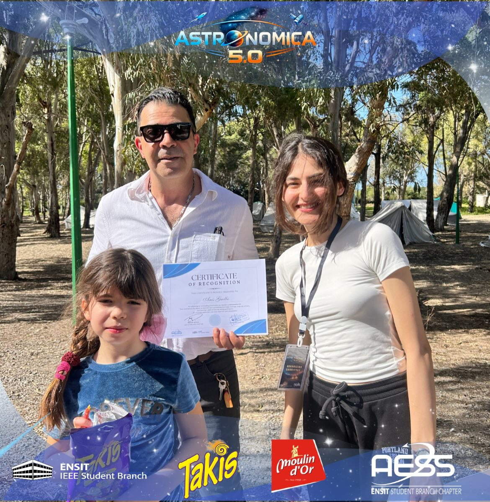
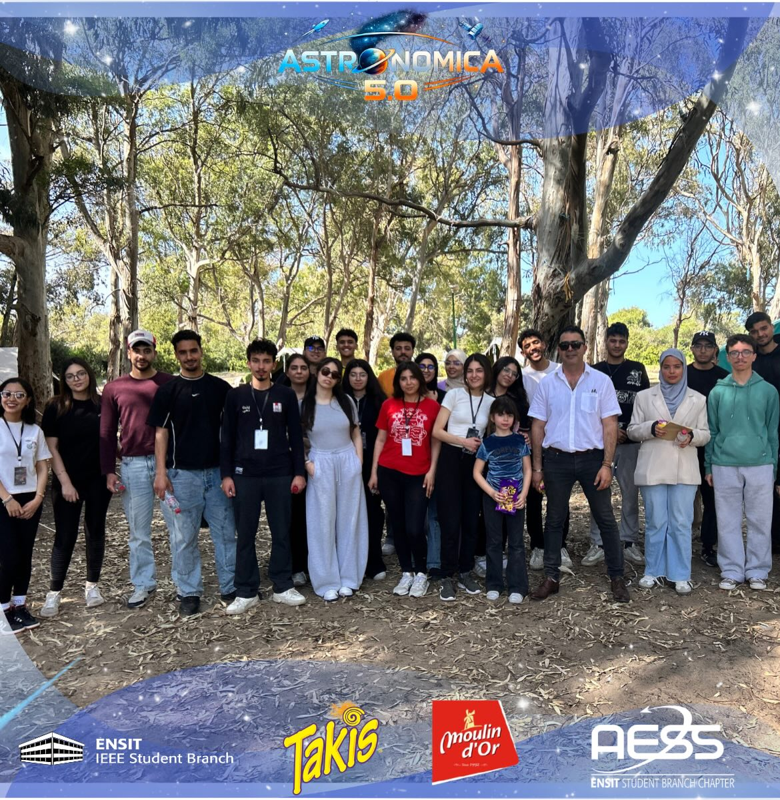
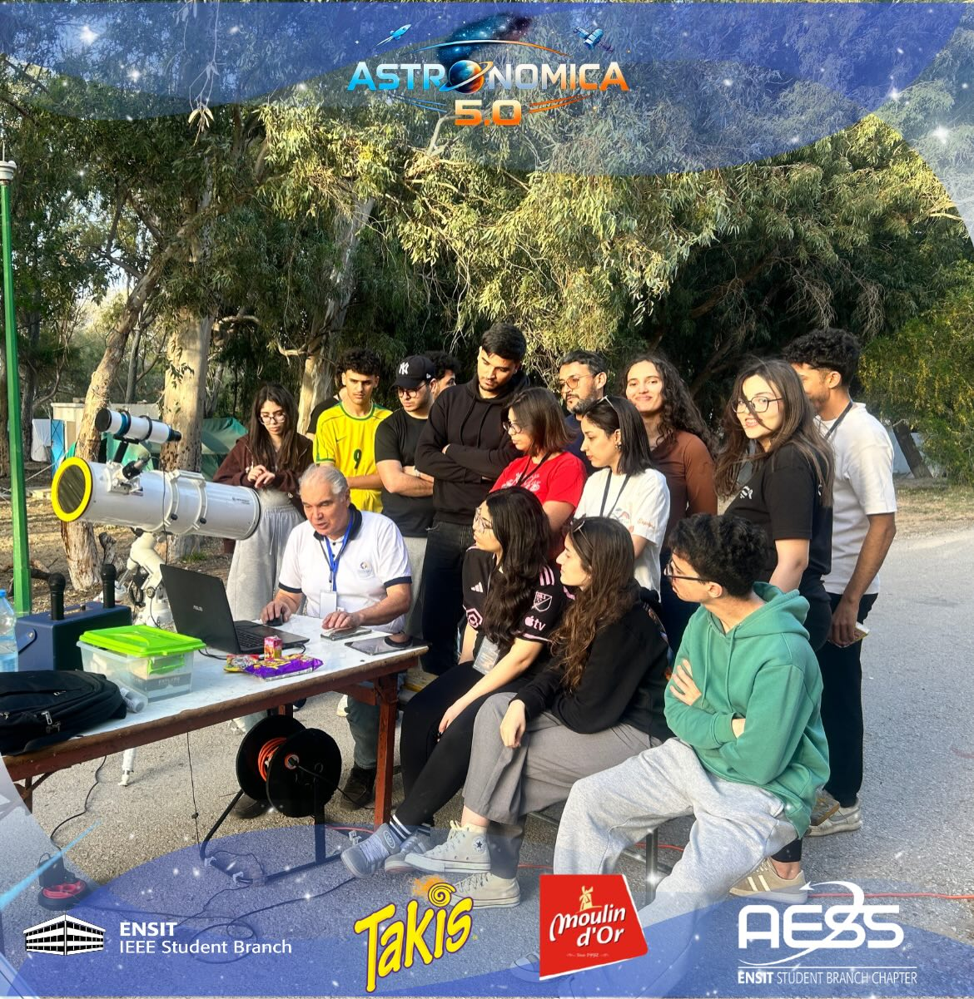
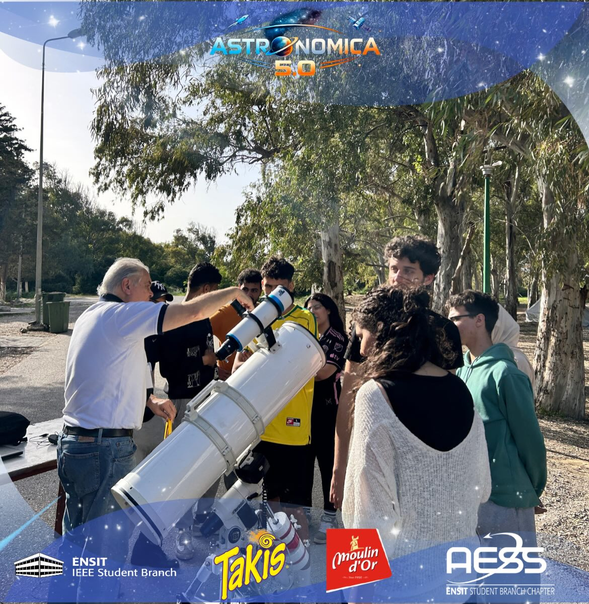

IEEE ENSIT AESS presents
Astronomica 5.0
Sky Builders: an immersive aerospace camping experience where curiosity, exploration, teamwork, and hands-on learning meet.

Discover · Build · Explore
A journey beyond the sky
It started with a question: how did humans learn to fly? From there came the bigger ones:
how do we reach orbit, and can we live on another planet? Astronomica 5.0 - Sky Builders
turns that curiosity into an immersive aerospace camping experience where ideas meet exploration.
The event brings together aerospace enthusiasts, builders, and future innovators in a space
that blends discovery, teamwork, and hands-on learning. It celebrates designing for the sky,
the atmosphere, and beyond, while encouraging participants to imagine bold solutions for the future.
Astronomica 5.0 is a journey into the questions that push humanity forward and a place where
the next generation of sky builders can connect, create, and think bigger.
Moments from the event
Astronomica 5.0 in action


